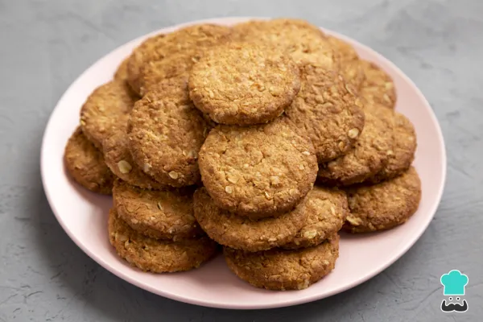

Home
Galletas recipe

Galletas
Son fáciles y rápidas de hacer y se puden degustar acompañadas con un chocolate calentito o café
Esta receta es ideal para gente que le guste la avena tanto como a nosotros y que busquen, a su vez, snacks saludables y caseros,ya que la cantidad utilizada de azúcar es minima y, además, ofrecemos alternativas mas sanas
Ingredients
- 120 gramos de avena en copos suaves(hojuelas)
- 40 gramos de harina(de trigo o de avena)
- 40 gramos de azúcar(moreno o blanco)
- 1 huevo
- 60 mililitros de aceite de girasol
- 1 cucharadita de levadura en polvo(polvo de hornear)
- 1 cucharadita de canela molida
- 1 pellizco de sal
Steps
- Mezcla todos los ingredientes en un bol formar una pasta. Si dispones de un robot mezclador, mucho mejor, pero si no es asi, puedes mezclar con una espatula. Puedes usar Azucar blanco, azúcar moreno o panela. En cuanto a la harina, puede ser de trigo o de avena
- Forra la bandeja del horno con papel sulfurizado o vegetal y forma las galletas de avena haciendo pequeñas bolas con las manos y luego aplastándolas. Para obtener unas galletas de avena crujientes, el truco está en no hacerlas muy gruesas.
- Con el horno precalentado a 200 ºC con calor arriba y abajo y con la función de ventilador (en caso de tenerla), hornea las galletas de avena durante unos 10 minutos o hasta que estén doraditas. Deben quedar ligeramente tostadas, no mucho.
- Pasado ese tiempo, deja que las galletas de avena se enfríen y guárdalas en una caja o bote cerrado para que sigan crujientes. ¡Duran hasta 3 días! Como ves, esta es una receta de galletas de avena fáciles de hacer, ideal para niños y adultos porque son rapidísimas y muy saludables (sobre todo si usas azúcar moreno o panela).